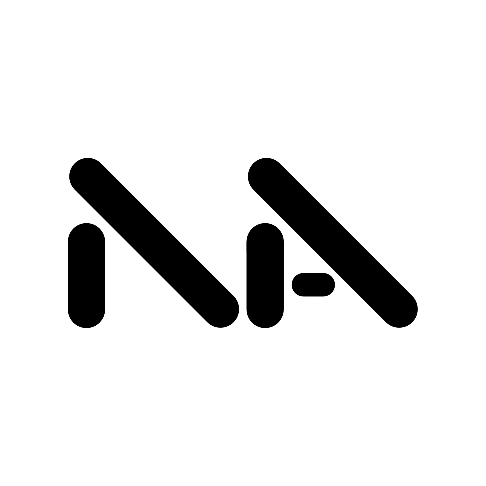

Vi har lanserat NextArk – en plattform som guidar arkitekter till nästa steg i karriären.
I en tid av osäker marknad, hållbarhetskrav och snabb teknisk utveckling befinner sig många av oss i ett mellanrum. NextArk samlar kostnadsfria utbildningar och resurser på ett ställe, så att du enkelt kan hitta rätt väg framåt – oavsett om du vill fördjupa dig inom hållbarhet, BIM eller vidareutbildning efter din examen.
Vår vision är att skapa lika möjligheter för alla arkitekter, oavsett bakgrund.